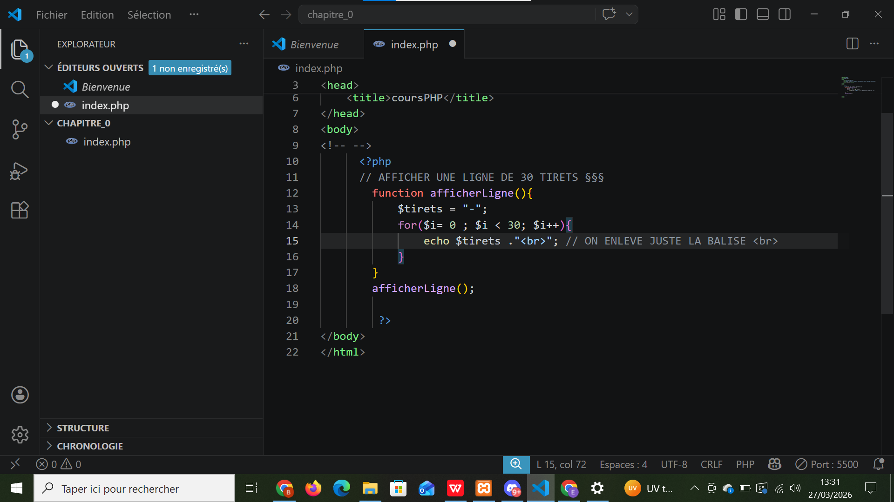
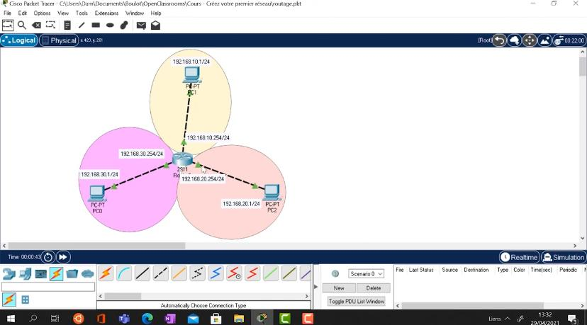

Mes Projets Classe
Projets réalisés en cours — IoT avec Arduino, PHP et Administration Réseaux.
Projet IoT — Poubelle Intelligente
La porte de la poubelle s'ouvre à l'approche d'un objet grâce au capteur ultrason qui détecte le mouvement. Le servomoteur ouvre ensuite la porte automatiquement. Ce processus obéit aux instructions saisies dans l'IDE Arduino.
 Montage du projet sur breadboard avec capteur ultrason et servomoteur
Montage du projet sur breadboard avec capteur ultrason et servomoteur
Projet PHP — Afficher 10 Tirets
Première fonction PHP réalisée en cours : une boucle qui affiche 10 tirets en utilisant une structure de contrôle for. Un premier pas concret dans la programmation côté serveur.

Code source PHP de la fonction Résultat affiché dans le navigateur
Résultat affiché dans le navigateur
Projet IoT — Création d'un Réseau
Conception et simulation d'un réseau local composé de trois machines et d'un routeur. Configuration des adresses IP, des masques de sous-réseau et des tables de routage pour assurer la communication entre les postes.

Schéma du réseau — 3 machines et 1 routeur